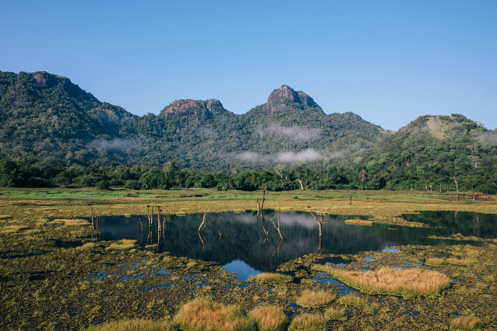
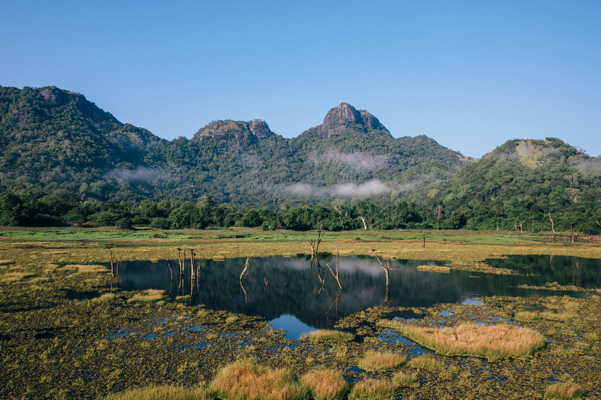
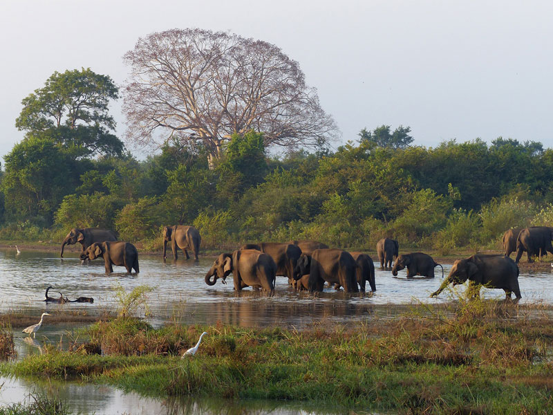
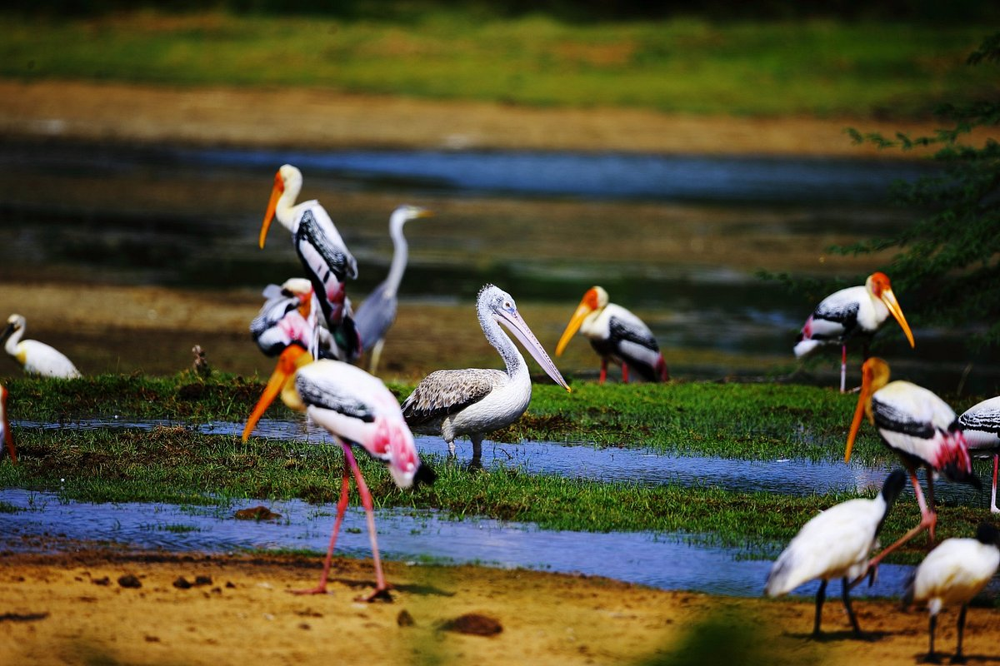
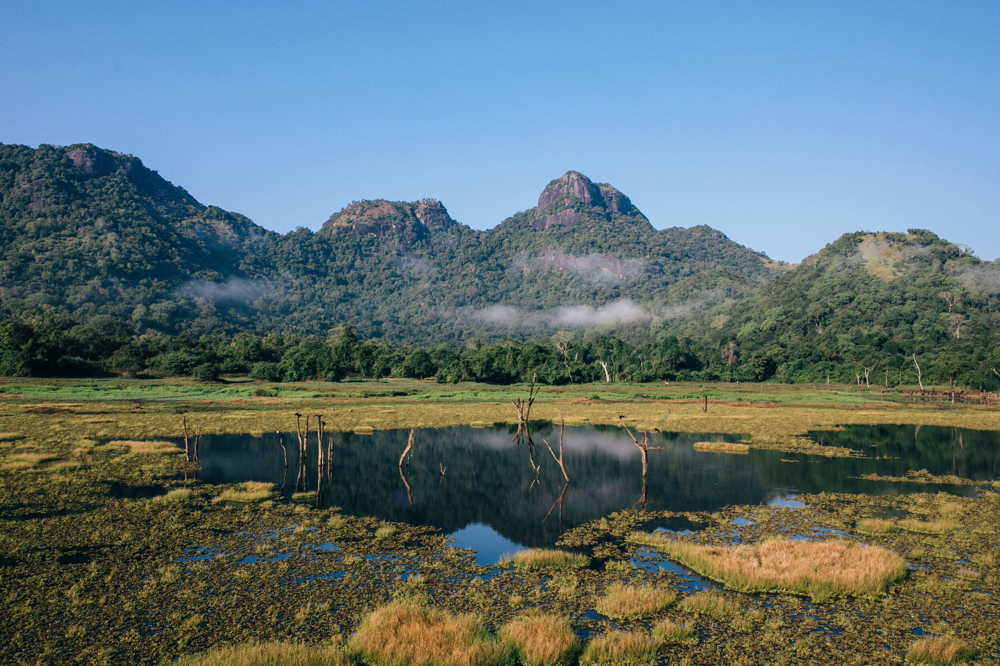

Welcome to the Department of Wildlife Conservation, a dedicated institution committed to the preservation and protection of our planet's diverse wildlife and their natural habitats. Established with a profound sense of responsibility, our department strives to create a harmonious balance between the needs of human societies and the ecological well-being of the Earth. Through comprehensive research, education, and conservation initiatives, we aim to safeguard endangered species, restore ecosystems, and promote sustainable practices that ensure the coexistence of both human and animal life.
Our team at the Department of Wildlife Conservation is a collective force of passionate and skilled individuals united by a common goal—to make a positive impact on the world's biodiversity. Comprising experts in fields such as wildlife biology, environmental science, and community engagement, our team works collaboratively to address the complex challenges facing wildlife today. By combining scientific expertise with a deep commitment to conservation, we strive to implement effective strategies that protect and preserve the delicate balance of our ecosystems.
Embark on a journey through the heart of our ongoing conservation projects. From habitat restoration initiatives to community-based wildlife protection programs, each project reflects our commitment to creating lasting change. Through innovative research, hands-on fieldwork, and strategic partnerships, we actively contribute to the conservation and restoration of ecosystems. These projects not only benefit wildlife but also foster sustainable practices that promote the well-being of local communities and contribute to the broader global effort to address environmental challenges.
